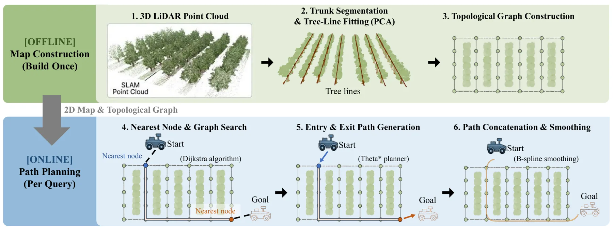
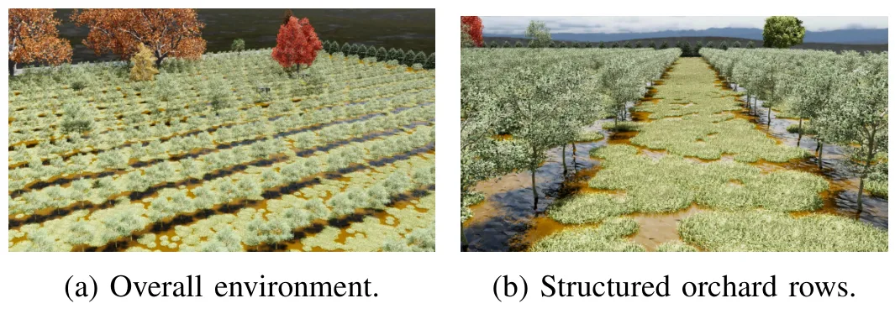
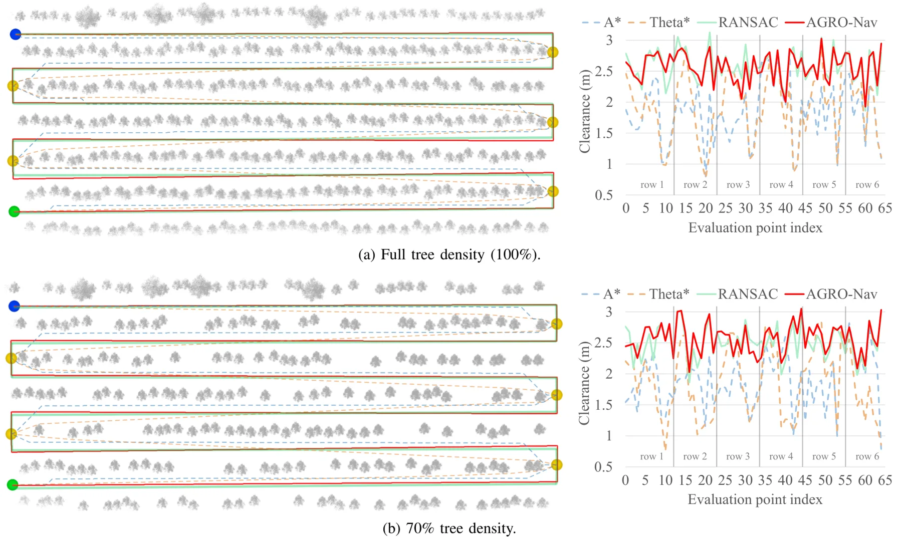
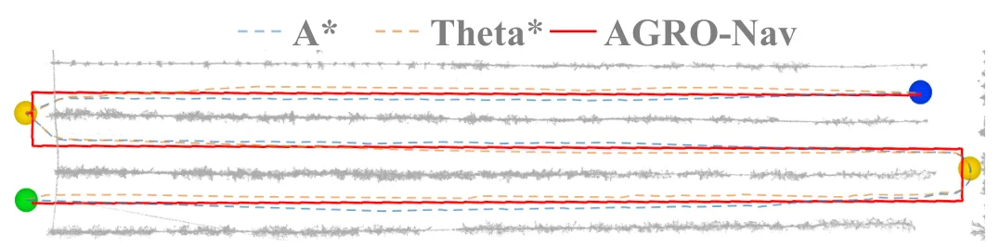
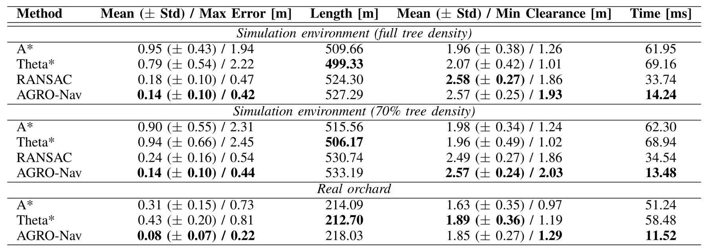

AGRO-Nav：基于图的自主果园导航AGRO-Nav: Autonomous Graph-based Orchard Navigation
直接使用 SLAM 点云进行结构提取和导航规划，并提供实地与仿真结果；与定位建图后端虽不完全同层，但工程相关性强。
一句话工作总结
展示了从 SLAM 点云到结构化导航图的完整工程链路，适合跟踪半结构化农业环境中的几何先验和规划鲁棒性。
摘要
AGRO-Nav 从 SLAM 点云中的树干聚类拟合树行，自动构建行内/行间稀疏拓扑图，用 Dijkstra、Theta* 和三次 B-spline 生成行中心轨迹；实地试验平均误差约 0.08 m，规划速度约为基线的 4–5 倍。
Orchards form semi-structured environments in which parallel tree rows create natural driving corridors, yet narrow inter-row clearance and dense foliage lead geometry-agnostic grid planners to drift off the row center and risk trunk or canopy contact. We present AGRO-Nav, an automated framework for static graph-based global planning in orchards. From tree-row lines fitted to trunk clusters in a SLAM point cloud, it builds, without any manual waypoints, a sparse topological graph of intra- and inter-row connectivity; a global route is then found by Dijkstra search on this graph, connected to the start and goal by any-angle Theta* segments, and smoothed with a cubic B-spline. In real-orchard trials, AGRO-Nav follows the row center with a mean error of about 0.08 m, far below the A* (0.31 m) and Theta* (0.43 m) shortest-path baselines, while planning roughly four to five times faster. In Isaac Sim, it attains the lowest error among A*, Theta*, and a reproduced RANSAC midline baseline and remains stable as tree density drops to 70%, where the RANSAC baseline degrades. The resulting trajectories---straight row-centered segments joined by controlled turns---suit differential-drive and four-wheel-steering platforms.
中文解读摘录
- 中文名：PIVOT：面向真实世界三维重建的多轨迹位姿、内参与新视点评测数据集和测试平台
- 方向：三维重建、NeRF、3DGS、位姿与相机内参评测。
- 要点：针对机器人和无人机环境中轨迹、位姿和内参不理想的问题，提供多轨迹采集数据、测量位姿与 COLMAP 优化位姿、标定与优化内参，并分别评估已见/未见轨迹、位姿来源和内参来源的敏感性。
- 判断：对真实部署下的重建评测很有价值，尤其适合检查“训练轨迹内插”是否掩盖了新轨迹泛化问题；不是 SLAM 算法本身。
图表/页面预览
{kind=link}

{kind=link}

{kind=link}

{kind=link}

{kind=link}
